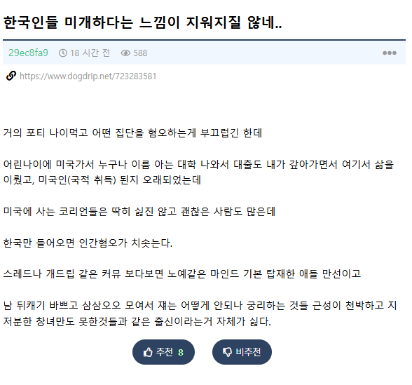
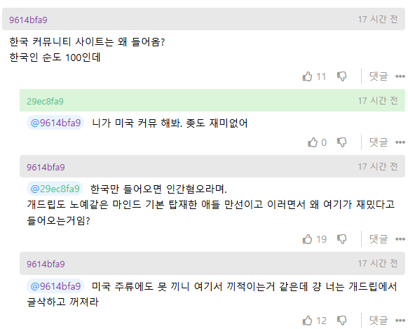
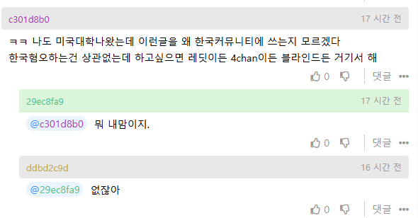
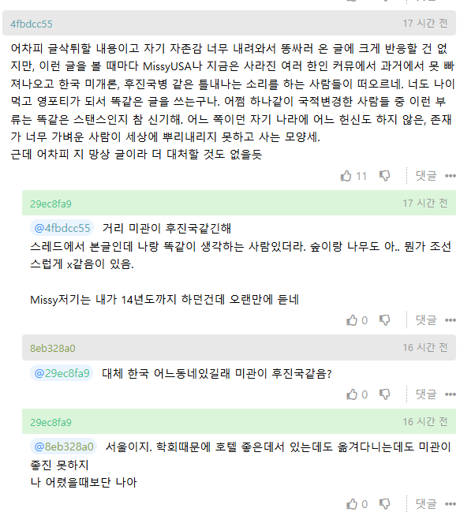

https://www.dogdrip.net/723283581
학회때문에 왔다는 익붕이는
한국인들 미개하다는 말을 한글로 쓰고있다
원종이 변종이냐




https://www.dogdrip.net/723283581
학회때문에 왔다는 익붕이는
한국인들 미개하다는 말을 한글로 쓰고있다
원종이 변종이냐
중국 반응 되게 잘 안다.
커뮤밖으로 좀 나와 살아라 유사짱1깨야
와 아시는구나! 중국몽!
하는 짓하고 욕하는 대상을 보면 그 누구보다 한국인인데 ㅋㅋㅋㅋㅋ
걍 병신인데 먹이금지
미국에 감 > 계속살아도 나는 이방인이라는 생각을 떨칠 수가 없음 > 내가 떠나온 한국은 자기가 없어도 잘 굴러감 > 보기싫음. 한국이 개 병신이고 내가 선택한 미국이 최고여야하는데 쟤들은 자기의 고통을 모른채로 잘 살고있음 > 좋게 생각하려해도 미국에선 내가 있을 자리가 없음 > 개드립 익명판에서 한국까면서 소속감 느끼려고함 (현재)
이게 맞는듯 결국 자기가버린나라라 잘돼는건데도 배아픔 + 요즘또람프땜시 입지가 좁아져서 화풀이할게 지가버린 나라밖에없는 쫌생이
인삼밭으로 간 고구마가 고구마밭 보고 욕하는거지 ㅇㅇ
결론: 걍 쫌생이
1세계에서 외면받는 1세계인이 고국으로 돌아왔는데도 외면받아서 "감히 내게?"를 시전중
주식 팔고나면
더 하락하길 바라는 심리랑 같은거지뭐
익절이든 손절이든
팔고나서 떨어지면 내선택이 맞았다는게 증명되는거니까
천성이 김치맨이네
아무리 바꾸려해도 푹 삭힌 한국 김치맛을 못잊는
바나나같은새끼네 ㅋㅋㅋㅋ
미국이라는데 왜 원종단을 찾냐 ㅠㅠ 그러지마라
엔화 망해서 힘들다
$PAPER ㄷㄷ
어딜가나 있다 외국나와 살면서 본인 국가 내려치는 사람들은
어딜가나 있더라고 진짜
자존감 개박살난거 보니
미국에 있는것만 진실이고 메인스트림에 끼지 못해 겉도는 너드새끼인가본데
딱 보면 보이지 않음?
회사에도 저런 새끼들 많아
자존심은 쎈데 자존감은 낮은 애들 ㅋㅋ
세상 제일 안타까운 부류임
트럼프 뽑은 새끼들이랑 같이 부대끼고 사는 건 안 부끄럽나ㅋㅋ
그..동병상련..
딱 보니까 능지도 비슷해보이는데
그런 생각을 할 수 있을리가..
한국이 왜 싫냐고 하면 그냥 싫어 할 사람임
참 븅신같다 ㅋㅋㅋ 걍 더 할말이 없다.
보통 부적응자 새끼들이 한국 커뮤니티 가서 개소리나 싸지름
평범한 패배자새끼임ㅋ
전형적인 교포티지 뭐
말하는 거 보니 미국 커뮤도 쫓겨났나봄
자아 비대한 새끼들은 그 집단에서 나오게 될 때 망하라고 저주 퍼붓는데 정작 잘 살고 있으면 다 저 꼬라지로 기웃거림 ㅋㅋㅋ
원래 견문 좁은 졷밥새 끼들이 저럼ㅋㅋ
외국인들은 반대로 얘기함 교포들 ㅈㄴ ㅂㅅ같고 상종하기 싫은데 본토 한국인들이 친절하고 건강하다는데 우리 사장도 자기 인생 첫 한국인이 교포들이라 한국 오기 전까지 한국인들 ㅈㄴ 싫어했었대
미국에 살면 그게 더 우월하다고 생각하나본데
난 오히려 미국에 살면 더 힘들것 같은데
치안 개판이라서
해외 나와서 오래 살다보니 걍 모든게 좆같고 그렇지?
그대로 한국에서 살았으면 느끼지 않았어도 됐을 영원한 외부인같은 느낌을 받아도 되지 않았을 수 있는데 난 무슨 부귀영화를 누리자고
해외까지 아득바득 기어 나와서 이러고 있나 라는 생각이 들고
외국애들이랑 어울리자니 보이지 않는 벽같은게 느껴지고
어떻게든 현지에 섞이려고 알랑방구 뀌다가 집 돌아오니까
같은 하늘 아래 같은 땅에서 똑같이 벌어먹고 살고 있는데
아니 오히려 나는 현지인보다 언어를 하나 더 유창하게 할 줄 알고 그 외에 다른 능력도 뛰어날지도 모르는데
그저 현지인들과 피부색이 눈 색이 머리색이 국적이 다르다는 이유로 언젠간 네 나라로 돌아갈거라는 생각을 기저에 깔고
날 계속해서 외부인 취급하는 현지인들 사이에서 버티려는 현실에 지치고 힘들거야
여기까진 이해한다 나도 그러니까
근데 너랑 다른점은 그럼에도 나는 친구가 있고 인연이 생겼고 혐오에 빠져들지않았으며 내 자신과 고국을 사랑하고 있는걸거야
그렇다고 너는 현지에서 한국인들이랑 어울리자니 그 알량한 자존심이 허락 안할 것이고
그 속에서 피어난 방어기재로
난 작은 우물 안에서 태어나 계속해서 그 곳에서 살고 있는 너희들과 달리
우물을 벗어나 머나먼 타지에서 내 기준에서 핍박과 박해를 견디며 열심히 살고있는 나는! 너희같은거랑 차원이 다른 아주 우월한 존재라고 생각하면서 그 바닥을 향해 쳐박혀버린 너덜거리고 추악하며 알량한 자존감이 그런 글을 써버리게 만들고 말았겠지
삶의 기반이 모두 외국에 있는데 이제와서 한국에 돌아가자니 막막하다고 느끼고 있을지도 모를일이지
그러던중에 한국 커뮤를 들여다보니 항상 나라가 살기 팍팍하다며 올라오는 글들을 보면서
그래도 쟤들보다는 내가 낫다는 생각을 할 수도 있어
그렇다고 네가 한국 커뮤에다가 그 추악한 자존감을 채우기 위해 좆같은 글을 써도 될 이유는 되지않으니
힘내서 살자하건 한국 커뮤에서 네 자취를 감추고 꺼져줬음해
라고 할 뻔했네 ;;;
잘 참았다 야
외국 이민간 중국인들이 중국에 비판적인 말하면 여기 댓글들이랑 똑같이 반응하던데 똑같은 놈들이 중국 욕하는구나
이러면 짱몰이하던데 시진핑 개새끼